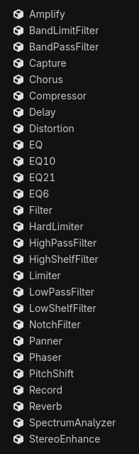

Hiệu ứng âm thanh
Godot có sẵn một số hiệu ứng âm thanh có thể được thêm vào audio bus để thay đổi mọi âm thanh đi qua bus đó.

Hiểu được cách hoạt động của từng hiệu ứng có thể khá khó, vì vậy đừng nản lòng nếu bạn phải tra cứu! Nếu bạn mới làm quen với âm thanh, hiểu được các hiệu ứng thiết yếu sẽ giúp bạn trong hầu hết các trường hợp! Đó là:
Equalizer & Filter
Limiter
Delay & Reverb
Hãy thử từng hiệu ứng để cảm nhận cách chúng thay đổi âm thanh.
Ghi chú
AudioSample không hỗ trợ các hiệu ứng này.
Dưới đây là mô tả ngắn về các hiệu ứng có sẵn:
Amplify
Thay đổi âm lượng của âm thanh. Tuy nhiên, cần cẩn thận: đặt mức âm lượng quá cao có thể gây clipping số cho âm thanh, tạo ra những tiếng rè và tiếng lốp bốp khó chịu. Hãy cân nhắc dùng hard limiter hoặc compressor để ngăn clipping, hoặc dùng distortion ở chế độ clip nếu bạn muốn có clipping ở mức 0 dB hoặc thấp hơn.
BandLimitFilter
Bộ lọc "band-limit" làm suy giảm các tần số tại điểm cutoff và cho phép các tần số nằm ngoài điểm đó đi qua mà không thay đổi. Nó tương tự bộ lọc notch, nhưng yếu hơn. Nó ngược lại với bộ lọc band-pass. Bộ lọc này có thể được dùng để nhường chỗ cho các âm thanh khác phát ở điểm cutoff.
BandPassFilter
Bộ lọc "band-pass" cho phép các tần số tại điểm cutoff đi qua mà không thay đổi, và làm suy giảm các tần số nằm ngoài điểm đó. Nó ngược lại với bộ lọc band-limit và bộ lọc notch. Bộ lọc này có thể được dùng để mô phỏng âm thanh đi qua đường dây điện thoại cũ hoặc loa phóng thanh. Điều biến điểm cutoff có thể mô phỏng âm thanh của pedal guitar wah-wah, hãy nghĩ tới tiếng guitar của Jimi Hendrix trong Voodoo Child (Slight Return).
Capture
Sao chép các mẫu âm thanh (audio sample) của audio bus mà hiệu ứng này gắn vào một bộ đệm vòng (ring buffer) bên trong. Hiệu ứng này có thể được dùng để thu dữ liệu từ microphone hoặc truyền âm thanh qua mạng theo thời gian thực. Nói chung, nó có thể được dùng để lưu dữ liệu âm thanh thời gian thực để phát lại, và thậm chí để tạo hình ảnh trực quan hóa âm thanh theo thời gian thực, như một máy hiện sóng (oscilloscope). Hiệu ứng này không thay đổi âm thanh.
Chorus
Hiệu ứng "chorus" nhân bản một tín hiệu, thay đổi rất nhẹ thời điểm và cao độ của từng bản sao, rồi điều biến chúng theo thời gian bằng một LFO (bộ dao động tần số thấp). Các bản sao (còn gọi là "voice") sau đó được trộn lại với tín hiệu gốc, tạo cảm giác âm thanh phát ra từ nhiều nguồn. Trong thực tế, loại hiệu ứng này có ở đàn piano, dàn hợp xướng và các nhóm hòa tấu nhạc cụ. Hiệu ứng này cũng có thể được dùng để mở rộng âm thanh mono và giúp âm thanh số có chất lượng tự nhiên hơn hoặc mang chất analog hơn.
Compressor
"Compressor" tự động làm suy giảm (hay "duck") âm lượng của tín hiệu đầu vào khi biên độ của nó vượt quá một ngưỡng âm lượng nhất định. Mức suy giảm được áp dụng tỉ lệ thuận với mức độ âm thanh đầu vào vượt ngưỡng. Tham số Ratio của compressor điều khiển mức độ suy giảm. Một trong những công dụng chính của compressor là giảm dải động (dynamic range) của các tín hiệu có phần rất to và phần rất nhỏ. Giảm dải động của tín hiệu có thể giúp nó hòa vào bản mix dễ dàng hơn.
Compressor có nhiều công dụng. Ví dụ:
Nó có thể được dùng trong bus Master để nén toàn bộ đầu ra trước khi chạm tới ngưỡng trần (ceiling) của limiter, giúp hiệu ứng của limiter trở nên tinh tế hơn nhiều.
Nó có thể được dùng cho các đoạn giọng nói để đảm bảo chúng nghe đều nhất có thể.
Nó có thể được sidechain bởi một nguồn âm thanh khác. Nghĩa là nó có thể giảm âm lượng của một tín hiệu bằng cách dùng âm lượng của một audio bus khác để phát hiện ngưỡng. Kỹ thuật này rất phổ biến khi mix âm thanh cho trò chơi điện tử, dùng để "duck" âm lượng của nhạc hoặc hiệu ứng âm thanh khi giọng nói trong game hoặc trong chế độ nhiều người chơi cần được nghe rõ hoàn toàn.
Nó có thể làm nổi bật các transient bằng cách dùng attack chậm hơn, cho phép các phần to hơn đi qua trước khi bị nén. Điều này có thể làm tăng độ "đanh" (punchiness) của hiệu ứng âm thanh.
Ghi chú
Nếu mục tiêu duy nhất của bạn là ngăn hoàn toàn tín hiệu vượt quá một biên độ nhất định, hard limiter có lẽ là lựa chọn tốt hơn compressor cho mục đích này. Tuy nhiên, áp dụng nén trước limiter vẫn là một thực hành tốt.
Delay
Hiệu ứng "delay" nhân bản một tín hiệu và lặp lại nó nhiều lần, với một khoảng thời gian ngắn giữa mỗi lần lặp (còn gọi là "tap"). Âm lượng của các tap giảm dần theo thời gian. Tất cả tạo nên hiệu ứng tiếng vọng. Delay rất phù hợp để mô phỏng không gian âm học của một hẻm núi hoặc căn phòng lớn, nơi âm thanh dội lại từ các bề mặt và tới tai người nghe sau một khoảng trễ. Hiệu ứng này tương tự reverb, vốn có âm thanh tự nhiên và nhòe hơn. Dùng delay kết hợp với reverb có thể tạo ra môi trường âm thanh rất tự nhiên.
Distortion
Hiệu ứng "distortion" thay đổi âm lượng của âm thanh theo cách làm biến đổi dạng sóng của nó, có thể tạo ra âm thanh "gắt" và "sáng".
Dưới đây là một số kiểu distortion mà Godot cung cấp:
Clip: giới hạn âm lượng của âm thanh, khiến nó nghe gắt.
Overdrive: nghe giống pedal distortion của guitar hoặc loa phóng thanh.
Lo-fi: giảm độ sâu bit (bit depth) của tín hiệu, mô phỏng loa cũ.
Mọi kiểu distortion đều có thể thêm tần số cao hơn vào âm thanh gốc, giúp nó nổi bật hơn trong bản mix.
Cảnh báo
Hãy cẩn thận với lượng distortion được thêm vào, vì nó có thể tạo ra âm thanh rất gắt và to.
EQ
"Equalizer" cho phép bạn kiểm soát mức khuếch đại (gain) của các tần số trên toàn bộ phổ, thông qua các "band" đại diện cho các vùng khác nhau của phổ. Equalizer có thể rất cần thiết để có bản mix sạch hơn, cho phép nhiều âm thanh phát cùng nhau mà các tần số không tranh chấp lẫn nhau. Một equalizer trên bus Master có thể hữu ích để làm suy giảm các tần số thấp và cao mà loa của thiết bị không tái tạo tốt. Ví dụ, loa điện thoại và máy tính bảng thường không tái tạo tốt âm thanh tần số thấp, và có thể khiến limiter hoặc compressor làm giảm âm lượng Master nhiều hơn mức cần thiết. Hiệu ứng này có thể được tắt khi cắm tai nghe, mang lại cho người dùng điều tốt nhất của cả hai.
Ghi chú
Hiệu ứng âm thanh này là lớp mà mọi equalizer khác kế thừa. Nó có thể được mở rộng bằng script tùy chỉnh để tạo equalizer với số lượng band tùy chỉnh.
EQ6, EQ10, EQ21
Godot cung cấp ba equalizer với số lượng band khác nhau, được thể hiện trong tên của chúng (lần lượt là 6, 10 và 21 band).
Filter
"Filter" kiểm soát mức khuếch đại của các tần số, thông qua việc dùng cutoff làm ngưỡng tần số. Nó khác với equalizer ở chỗ dùng các "hình dạng" khác nhau để kiểm soát tần số; nghĩa là tùy theo loại filter, các tần số sẽ được điều chỉnh mức khuếch đại khi chúng thấp hơn, cao hơn, nằm tại, hoặc nằm ngoài điểm cutoff. Filter có thể giúp nhường chỗ cho từng âm thanh và tạo ra những hiệu ứng thú vị.
Ghi chú
Hiệu ứng âm thanh này là lớp mà mọi filter khác kế thừa. Không nên dùng trực tiếp nó.
HardLimiter
"Limiter" không cho phép tín hiệu âm thanh vượt quá một mức ngưỡng âm lượng nhất định. Hard limiter dự đoán các đỉnh âm lượng và sẽ giảm mức khuếch đại một cách mượt mà khi âm lượng vượt qua mức ngưỡng trần. Nó hoạt động tương tự compressor, nhưng được thiết kế để hoàn toàn không cho âm lượng vượt qua một mức nhất định. Thêm limiter làm hiệu ứng cuối cùng của bus Master là một thực hành tốt, vì nó là biện pháp bảo vệ đơn giản chống lại clipping. Nếu bạn muốn có clipping, hãy cân nhắc dùng hiệu ứng distortion ở chế độ clip.
HighPassFilter
Bộ lọc "high-pass" làm suy giảm các tần số thấp hơn điểm cutoff và cho phép các tần số cao hơn đi qua mà không thay đổi. Bộ lọc này có thể được dùng để loại bỏ phần âm trầm của tín hiệu, khiến nó nghe "mỏng" hơn.
HighShelfFilter
Bộ lọc "high-shelf" kiểm soát mức khuếch đại của mọi tần số nằm trên điểm cutoff. Bộ lọc này có thể được dùng để tăng hoặc giảm độ trong của âm thanh.
Limiter
Ghi chú
Đây là hiệu ứng limiter cũ, bạn nên dùng hiệu ứng hard limiter mới thay thế. Hiệu ứng này được giữ lại để đảm bảo tính tương thích, tuy nhiên nên xem nó là đã lỗi thời (deprecated).
Đây là ví dụ về cách hiệu ứng này hoạt động: nếu ceiling được đặt là -12 dB và threshold là 0 dB, mọi mẫu âm thanh đi qua sẽ bị giảm 12 dB. Điều này làm thay đổi dạng sóng của âm thanh và gây ra méo tiếng.
LowPassFilter
Bộ lọc "low-pass" làm suy giảm các tần số cao hơn điểm cutoff và cho phép các tần số thấp hơn đi qua mà không thay đổi. Bộ lọc low-pass có thể được dùng để mô phỏng âm thanh "bị bóp nghẹt". Ví dụ như âm thanh dưới nước, âm thanh bị tường chắn, hoặc âm thanh từ xa.
LowShelfFilter
Bộ lọc "low-shelf" kiểm soát mức khuếch đại của mọi tần số nằm dưới điểm cutoff. Bộ lọc này có thể được dùng để điều chỉnh "độ mạnh" của âm thanh, bằng cách tăng hoặc giảm mức khuếch đại của dải âm trầm.
NotchFilter
Bộ lọc "notch" làm suy giảm các tần số tại điểm cutoff và cho phép các tần số nằm ngoài điểm đó đi qua mà không thay đổi. Nó ngược lại với bộ lọc band-pass. Bộ lọc này có thể được dùng để nhường chỗ cho các âm thanh khác phát ở điểm cutoff. Do mức độ suy giảm tần số mạnh, nó cũng có thể được dùng để loại bỏ hoàn toàn những tần số rất cụ thể và không mong muốn.
Panner
Di chuyển âm thanh sang trái hoặc phải. Nên dùng tai nghe khi cấu hình hiệu ứng này.
Ghi chú
Hiệu ứng này có thể không cần thiết với AudioStreamPlayer2D và AudioStreamPlayer3D, vì chúng tự động xử lý panning.
Phaser
Hiệu ứng "phaser" tạo ra một bản sao lệch pha và trộn lại với bản gốc. Bản sao sau đó được điều biến bởi một LFO (bộ dao động tần số thấp), khiến một số tần số triệt tiêu lẫn nhau theo những cách thú vị. Kết quả là một chuỗi các đỉnh và đáy quét qua phổ tần. Hiệu ứng này có thể được dùng để tạo hiệu ứng khoa học viễn tưởng hoặc giọng nói giống Darth Vader.
PitchShift
Cho phép điều chỉnh cao độ của tín hiệu độc lập với tốc độ của nó. Mọi tần số đều có thể được nâng lên hoặc hạ xuống mà ảnh hưởng tối thiểu tới các transient. Hiệu ứng này có thể hữu ích để tạo giọng nói cao hoặc trầm bất thường. Lưu ý rằng thay đổi cao độ có thể nghe không tự nhiên khi vượt ra ngoài một phạm vi hẹp.
Record
Lưu dữ liệu âm thanh vào một AudioStreamWAV. Một ví dụ sử dụng hiệu ứng này là ghi âm đầu vào microphone và lưu thành tệp WAV.
Reverb
Hiệu ứng "reverb" liên tục phát lại một bản sao của âm thanh đầu vào, giảm dần theo thời gian, và tạo ra hiệu ứng tiếng vọng nhòe (hay "vang"). Reverb rất phù hợp để mô phỏng âm thanh trong các loại không gian khác nhau, từ phòng nhỏ tới hang động lớn. Hiệu ứng này tương tự delay, vốn có âm thanh ít nhòe hơn. Dùng reverb kết hợp với delay có thể tạo ra môi trường âm thanh rất tự nhiên.
Reverb thường được xuất ra từ Area3Ds (xem Reverb bus).
SpectrumAnalyzer
Vẽ biên độ của tín hiệu âm thanh trong các dải tần được chỉ định. Hiệu ứng này thường được dùng để trực quan hóa âm thanh theo thời gian thực, như một biểu đồ phổ (spectrogram). Trực quan hóa giọng nói có thể là một cách hay để thu hút sự chú ý tới chúng mà không cần tăng âm lượng. Hiệu ứng này không thay đổi âm thanh.
Ghi chú
Cần truy cập AudioEffectSpectrumAnalyzerInstance để sử dụng hiệu ứng này. Bạn có thể tìm thấy một dự án demo sử dụng nó tại đây.
StereoEnhance
Điều chỉnh mức khuếch đại của kênh trái và phải, và biến âm thanh mono thành stereo thông qua dịch pha. Hiệu ứng này có thể được dùng để mở rộng hoặc thu hẹp âm thanh. Nên dùng tai nghe khi cấu hình hiệu ứng này.